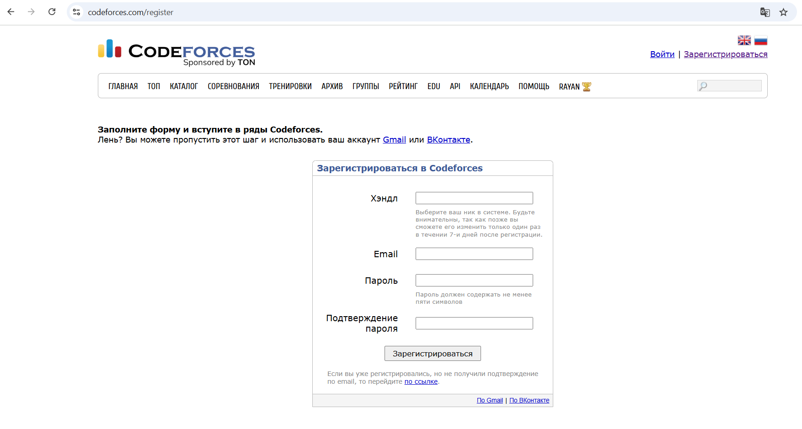
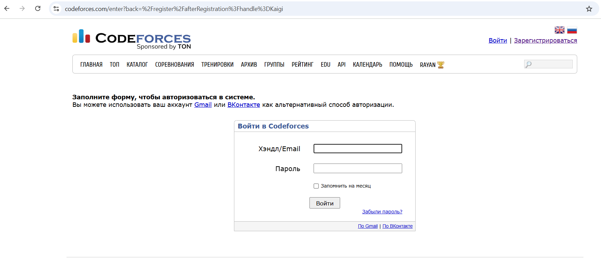

Codeforces 2010 жылы құрылған және әлем бойынша бағдарламашылар мен студенттер арасында өте танымал.
Тапсырмалар (Problems): Кодтау есептері әртүрлі категорияларға бөлінген.
Байқаулар (Contests): Codeforces әр апта сайын жарыстар өткізеді. Жарыстарда нақты уақыт аралығында тапсырмаларды орындау қажет.
Рейтингтер (Ratings): Әр қолданушының рейтинг жүйесі бар. Кодтау есептерін дұрыс шешкен сайын рейтинг өседі.
Аудитория: Codeforces әлемдегі ең белсенді және кәсіби бағдарламашылардың бірігу алаңы болып табылады.
Есептер әртүрлі тақырыптарда болады: математикалық есептер, алгоритмдер, деректер құрылымдары.
Есептер әртүрлі тақырыптарда болады: математикалық есептер, алгоритмдер, деректер құрылымдары, динамикалық бағдарламалау, графтар және т.б.
Әр есептің оңай, орташа және қиын деңгейлеріне сәйкес сілтемелері бар.
Есептерді шешу үшін әртүрлі бағдарламалау тілдерінде (C++, Python, Java, және басқалар) код жазуға болады.
Алғашқы тапсырмаларды жеңілінен бастаңыз: Codeforces сайтында есептер әртүрлі деңгейде болады, сондықтан ең алдымен оңай тапсырмаларды шешуге тырысыңыз.
Рейтинг жүйесін түсіну: Рейтинг жоғары болған сайын, сіздің деңгейіңіз де артады. Әр дұрыс шешім рейтингтің өсуіне ықпал етеді.
Жаттығулар: Жаттығулардың көмегімен алгоритмдер мен деректер құрылымдарын тереңірек үйренуге болады.
Жарыстарға қатысыңыз: Codeforces байқауларына тұрақты түрде қатысып, өз шеберліктеріңізді арттырыңыз.
Сайтқа кіру: Codeforces сайтына кіріңіз.
Тіркелу: Беттің жоғарғы оң жақ бұрышында "Тіркелу/Register" деген сілтеме бар. Оған басыңыз.
Тіркелу үшін "Тіркелу/Register" батырмасын басыңыз. Электронды поштаңызға Codeforces сайтынан растау хат келеді. Email-дегі растау сілтемесіне өтіп, тіркелуді аяқтаңыз.
Аккаунтқа кіру: Тіркелгеннен кейін "Login" батырмасын басып, пайдаланушы атыңыз бен құпиясөзіңізді енгізіңіз.
Codeforces сайтына кірген соң, "Contests" бөлімін таба аласыз. Мұнда барлық ағымдағы байқауларды көруге және қатысуға болады.
Байқауға қатысу үшін "Register" батырмасын басып, жарыс басталғанда тапсырмаларды шешуге кірісіңіз.
Problems бөлімінде әртүрлі есептер бар. Есептерді шешу үшін олардың жанында көрсетілген "Submit" батырмасын басып, кодты жүктеңіз.
Есепті шешу үшін:
Байқаулар мен тапсырмаларды орындаған сайын сіздің рейтингіңіз көтеріледі. Rating жүйесі бойынша әр қолданушының деңгейі анықталады:
Discussion бөлімінде әр есепке қатысты сұрақтар мен жауаптар бар. Егер есепті түсінбесеңіз немесе қателік тапсаңыз, талқылаулар арқылы көмек сұрауға болады.
Өткен байқауларға қатысып, өткен тапсырмаларды "Archive" бөлімінен қарауға болады.